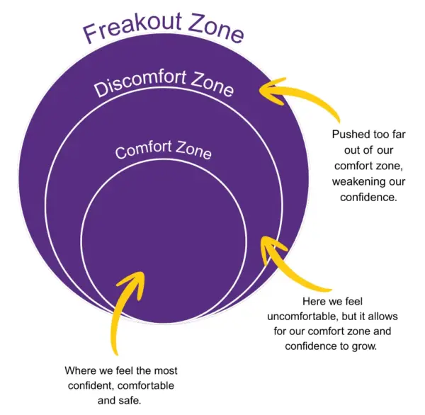

Confidence is all about believing in yourself and trusting that you can do what you want to do.
Confidence is a skill that we develop over time and with practice.
To grow our confidence, we must step outside of our comfort zones.

To build our confidence, we can:
- Positive Mindset: allows us to grow and improve how we think about ourselves and the world around us.
- Positive Self Talk: positively speak about yourself to boost confidence, motivation and resilience.
- Reflect on your progress.
- Practice self-compassion: treat yourself with kindness.
- Positive relationships: Good relationships help us feel happy, safe and supported.
- Embrace challenges.
- Recognise your achievement.